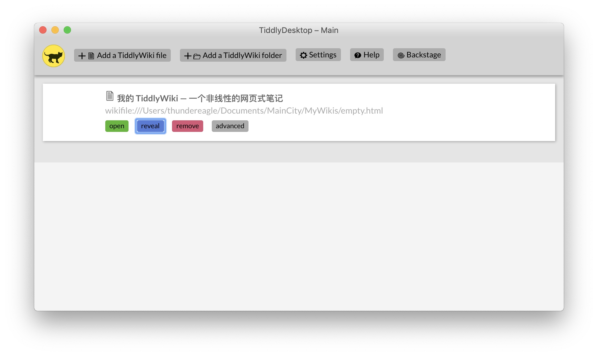

下载
去官网下载一个空模板 empty.html 。emmmm没啥好说的。
但是请注意一个普通的浏览器如Chrome，如果直接打开这个文件可能会出现一些js错误，而且在保存的时候会直接变成下载。所以需要使用一定的附加手段。具体有哪些手段，官方文档里有说。
打开
我们在这里使用的是 TiddlyDesktop.app ，一款桌面端 TiddlyWiki 浏览器，内置 TiddlyWiki 服务。
打开 TiddlyDesktop 图标如下，是一只小猫。

点击界面上的 Add a TiddlyWiki file 选择刚才的 empty.html 就成功添加了，现在这个界面应该长这样：

对界面做一些说明：
- Add a TiddlyWiki file 导入一个 TiddlyWiki 的文件。
- Add a TiddlyWiki folder 添加一个包含 TiddlyWiki 的路径(库)，这个功能尚不稳定，大家可以自己试试看。
- Settings 设置里可以设置备份路径，并且可以进入内部设置路径。
- Help TiddlyDesktop 的帮助。里面告诉你这个软件内置了服务，可以通过修改配置的方法让网络上的计算机利用浏览器访问打开的 Wiki 文件(需要安装插件)。
- Backstage TiddlyDesktop 本身也是基于 TiddlyWiki 的，这里可以进入 TiddlyDesktop 的后台进行 Hack 。
- open 打开。
- reveal 定位文件位置。
- remove 删除，只是从库中删除，原文件还在。
- advanced 高级选项，现在只有文件备份选项。
为了方便管理，我把 TiddlyDesktop 的备份设置改为了
/Users/<myUserName>/Documents/TiddlyWiki_Backups/$filename$_backup/
统一放在一块会显得更整齐一些(把 <myUserName> 改成自己的用户名，Windows和Linux上同理)。